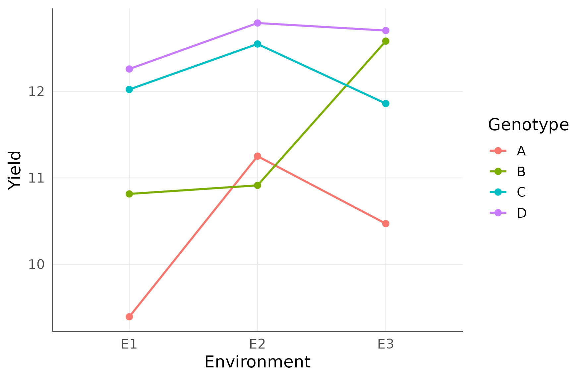
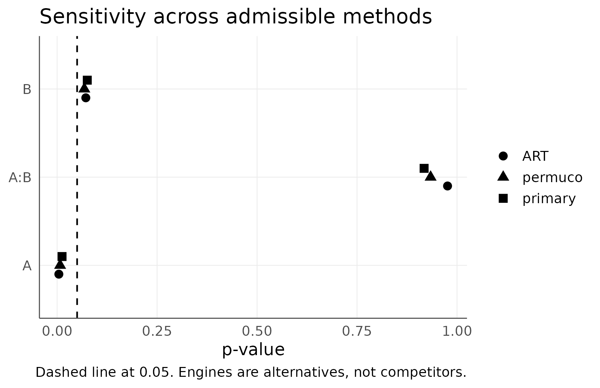

Multivariate, Multi-Environment, Batch, and Sensitivity Workflows
agriRank Development Team
Source:vignettes/v05-multivariate-multienvironment-batch-sensitivity.Rmd
v05-multivariate-multienvironment-batch-sensitivity.RmdScale-up vignette Package:
agriRank Version targeted:
0.14.0 Owns: what changes when an
experiment has several responses, several sites, or when the same design
is analysed many times.
1. Why this vignette exists
The vignettes before this one analyse one response, in one place, once. Real agronomic programmes rarely stop there.
A single trial measures biomass, SPAD, root mass, grain quality and disease score. A variety programme runs the same genotypes across eight sites and three years. A screening study analyses forty accessions for six traits.
Each of those raises a problem that does not exist in the single-response case, and all three problems have the same root: the number of tests grows faster than the evidence does.
Decide what the family of inferences is, before running any of them. Report what was in the family, not only what came out of it.
1.1 The four topics, and what unites them
| Topic | The problem it addresses |
|---|---|
| multivariate | several correlated responses, and one global question |
| multi-environment | genotype performance that depends on the site |
| batch | the same design applied to many responses, without adjusting the model per response |
| sensitivity | whether a conclusion depends on one analytical choice |
2. Learning objectives
After working through this vignette, the reader should be able to:
- decide whether several responses call for a multivariate analysis or for separate analyses with multiplicity control;
- fit a rank-based multivariate analysis and read its statistics;
- recognise the replication a multivariate resampling test requires, and why;
- declare a multi-environment trial, and explain what the environment term asserts;
- read a genotype-by-environment interaction as the scientific object it usually is, rather than as a nuisance;
- decide when the additive model without the interaction is defensible;
- run a batch analysis and explain what its interface makes impossible;
- choose a multiplicity adjustment across responses, and defend the family;
- run a sensitivity analysis and interpret agreement and disagreement;
- present sensitivity results in a figure a reviewer can read at a glance.
3. The module in one map
| Function | Answers | Requires |
|---|---|---|
agri_multivariate() |
do the treatments differ in the response vector | replication in every cell |
agri_multienv() |
does genotype performance depend on the environment |
environment, usually block
|
agri_batch() |
the same question, for many responses | one declared design |
agri_sensitivity() |
does the conclusion survive another engine | a fitted object |
4. Multivariate or separate analyses?
4.1 The decision
This is the first question and it is scientific, not computational.
| Ask a multivariate question when | Ask separate questions when |
|---|---|
| the responses are facets of one construct | the responses are distinct outcomes |
| the global claim is “the treatments differ overall” | the claim is about each response |
| the responses are strongly correlated | the responses are nearly independent |
| a reviewer would object to five separate tests | each test answers a separate hypothesis |
4.2 What a multivariate test buys, and what it costs
It buys a single test with a single error rate, which resolves the multiplicity problem by construction. It also gains power when the responses are correlated and the treatment shifts them in a consistent direction.
It costs interpretability. A significant multivariate test says the response vectors differ. It does not say which response drove it, and following it with per-response tests reintroduces exactly the multiplicity it removed.
4.3 The teaching dataset
Note the two plots per block and treatment. A multivariate resampling test needs replication inside every factor-level combination, so a blocked design with a single plot per cell cannot be analysed this way. That is a property of the design, and it is worth deciding before the field is laid out.
set.seed(901)
mv <- expand.grid(
plot = 1:2,
block = factor(1:5),
treatment = factor(c("control", "bio", "chemical"))
)
u <- rnorm(nrow(mv), 0, 1)
# A shared latent term u makes the three responses correlated, as they are in
# a real plant: a vigorous plot is above average on all of them.
mv$biomass <-
20 +
c(control = 0, bio = 2.5, chemical = 4)[mv$treatment] +
0.5 * as.numeric(mv$block) +
u + rnorm(nrow(mv), 0, 1.2)
mv$spad <-
35 +
c(control = 0, bio = 3, chemical = 5)[mv$treatment] +
0.7 * u + rnorm(nrow(mv), 0, 1.5)
mv$root_mass <-
8 +
c(control = 0, bio = 1.5, chemical = 2.2)[mv$treatment] +
0.4 * u + rnorm(nrow(mv), 0, 0.8)
round(cor(mv[, c("biomass", "spad", "root_mass")]), 2)
#> biomass spad root_mass
#> biomass 1.00 0.68 0.55
#> spad 0.68 1.00 0.56
#> root_mass 0.55 0.56 1.00The correlations are the reason a multivariate analysis is appropriate here. Three separate tests would treat as independent what is largely one signal.
4.4 Fitting
if (requireNamespace("MANOVA.RM", quietly = TRUE)) {
mv_fit <- agri_multivariate(
cbind(biomass, spad, root_mass) ~ treatment,
data = mv,
block = block,
resampling = "paramBS",
iter = 999,
seed = 901
)
print(mv_fit)
}
#> Warning in MANOVA.RM::MANOVA.wide(f, data = dat, resampling = resampling, : The
#> covariance matrix is singular. The WTS provides no valid test statistic!
#> agriRank multivariate fit
#> Mode: MANOVA.wide
#> Method: MANOVA.RM::MANOVA.wide (paramBS)
#> Responses: biomass, spad, root_mass
#> Block adjustment: block
#> Test statistic df p-value statistic_family effect paramBS (WTS)
#> 1 110.221 12 0 WTS block NA
#> 2 181.313 6 0 WTS treatment NA
#> 3 23.302 NA NA MATS block NA
#> 4 204.846 NA NA MATS treatment NA
#> 5 NA NA NA resampling block 0.390
#> 6 NA NA NA resampling treatment 0.001
#> paramBS (MATS)
#> 1 NA
#> 2 NA
#> 3 NA
#> 4 NA
#> 5 0.409
#> 6 0.000
if (exists("mv_fit")) print(summary(mv_fit))
#> $design
#> $design$design
#> [1] "multivariate"
#>
#> $design$responses
#> [1] "biomass" "spad" "root_mass"
#>
#> $design$treatments
#> [1] "block" "treatment"
#>
#> $design$blocks
#> [1] "block"
#>
#> $design$subjects
#> NULL
#>
#> $design$within
#> NULL
#>
#> $design$whole_plot
#> NULL
#>
#> $design$subplot
#> NULL
#>
#> $design$subsubplot
#> NULL
#>
#> $design$strip_a
#> NULL
#>
#> $design$strip_b
#> NULL
#>
#> $design$environment
#> NULL
#>
#> $design$n_rows
#> [1] 30
#>
#> $design$n_treatment_cells_observed
#> [1] 15
#>
#> $design$missing_response
#> biomass spad root_mass
#> 0 0 0
#>
#> $design$randomization
#> [1] "Multiple responses share the same declared experimental-unit structure."
#>
#> $design$validation
#> $ok
#> [1] TRUE
#>
#> $problems
#> [1] severity code message
#> <0 rows> (or 0-length row.names)
#>
#> attr(,"class")
#> [1] "agri_validation"
#>
#>
#> $mode
#> [1] "MANOVA.wide"
#>
#> $method
#> [1] "MANOVA.RM::MANOVA.wide (paramBS)"
#>
#> $responses
#> [1] "biomass" "spad" "root_mass"
#>
#> $omnibus
#> Test statistic df p-value statistic_family effect paramBS (WTS)
#> 1 110.221 12 0 WTS block NA
#> 2 181.313 6 0 WTS treatment NA
#> 3 23.302 NA NA MATS block NA
#> 4 204.846 NA NA MATS treatment NA
#> 5 NA NA NA resampling block 0.390
#> 6 NA NA NA resampling treatment 0.001
#> paramBS (MATS)
#> 1 NA
#> 2 NA
#> 3 NA
#> 4 NA
#> 5 0.409
#> 6 0.000
#>
#> $descriptive
#> block treatment n biomass spad root_mass
#> 1 1 bio 2 18.204 36.730 8.091
#> 2 1 chemical 2 22.809 40.052 8.947
#> 3 1 control 2 27.614 41.976 9.944
#> 4 2 bio 2 20.263 34.801 8.063
#> 5 2 chemical 2 24.332 36.577 9.347
#> 6 2 control 2 26.193 40.479 10.943
#> 7 3 bio 2 21.926 34.108 8.377
#> 8 3 chemical 2 24.032 36.735 10.191
#> 9 3 control 2 24.759 40.135 9.106
#> 10 4 bio 2 22.830 35.296 8.195
#> 11 4 chemical 2 25.997 37.932 8.956
#> 12 4 control 2 26.828 39.771 10.692
#> 13 5 bio 2 21.543 34.394 8.735
#> 14 5 chemical 2 25.294 39.632 9.077
#> 15 5 control 2 27.047 39.494 8.7574.5 Reading the statistics
| Statistic | Is | Behaves |
|---|---|---|
| WTS | Wald-type | liberal in small samples unless resampled |
| MATS | modified ANOVA-type | invariant to the scale of each response |
| resampled p | either, referred to a resampling distribution | the one to quote |
The MATS statistic deserves emphasis for agronomy. Biomass in grams, SPAD in index units and root mass in grams are on different scales, and a statistic that is not scale-invariant would let the response with the largest numbers dominate the test. MATS does not.
4.6 What a significant multivariate test licenses
It licenses the sentence “the treatments differ in the response vector”. It does not license “the treatments differ in SPAD”.
If the per-response question matters, either ask it as the primary question with multiplicity control across responses, which is the batch workflow of section 9, or pre-specify one response as primary and treat the others as secondary. Both are defensible; discovering which response was significant after a multivariate test is not.
4.7 Downstream objects
agri_table(mv_fit, what = "omnibus", format = "data.frame")
agri_report(mv_fit, "multivariate_analysis.md")
export_results(mv_fit, "multivariate_analysis.rds")5. Declaring a multi-environment trial
met <- simulate_agri("multienv", seed = 902, n = 5)
str(met)
#> 'data.frame': 60 obs. of 4 variables:
#> $ environment: Factor w/ 3 levels "E1","E2","E3": 1 1 1 1 1 1 1 1 1 1 ...
#> $ block : Factor w/ 5 levels "1","2","3","4",..: 1 1 1 1 2 2 2 2 3 3 ...
#> $ genotype : Factor w/ 4 levels "A","B","C","D": 1 2 3 4 1 2 3 4 1 2 ...
#> $ yield : num 9.39 8.21 8.45 9.51 9.26 ...
met_fit <- agri_multienv(
yield ~ genotype,
data = met,
environment = environment,
block = block,
method = "auto",
environment_interaction = TRUE
)
#> Registered S3 method overwritten by 'lme4':
#> method from
#> na.action.merMod car
met_fit
#> agriRank fit
#> Design: multienv
#> Method: Aligned Rank Transform
#> Response: yield
#> Term F Df Df.res Pr(>F) effect
#> 1 genotype 2.6875630 3 36 0.0608969 genotype
#> 2 environment 0.8350577 2 12 0.4575667 environment
#> 3 genotype:environment 0.6991708 6 36 0.6519773 genotype:environment5.1 What the environment term asserts
Declaring an environment asserts that sites, years or site-years are not exchangeable. A plot at site A is not interchangeable with a plot at site B, and the comparison of genotypes must respect that.
It also has a bookkeeping consequence that is easy to miss: block labels repeat across environments. Block 1 at site A and block 1 at site B are different blocks. The package namespaces them by environment in block-aware adapters, which is what stops the analysis from treating them as one.
5.2 The three terms
| Term | Question |
|---|---|
genotype |
averaged over environments, do the genotypes differ |
environment |
do the environments differ, averaged over genotypes |
genotype:environment |
does the ranking of genotypes change between environments |
5.3 The interaction is usually the point
In most variety programmes the GxE term is not a nuisance. It is the scientific question.
A genotype that wins everywhere is a broad recommendation. A genotype that wins in irrigated sites and loses in rainfed ones is a targeted recommendation, and the two are different products. Averaging over environments to report a single genotype ranking discards exactly the information a breeding programme exists to find.
| GxE | Reading | Recommendation |
|---|---|---|
| absent | rankings are stable | one recommendation everywhere |
| present, non-crossover | the gaps change but the order does not | one recommendation, with varying benefit |
| present, crossover | the order changes between environments | environment-specific recommendations |
The crossover case is the one that matters, and it is invisible in a marginal genotype table.
5.4 Looking for crossover
if (requireNamespace("ggplot2", quietly = TRUE)) {
agg <- aggregate(yield ~ genotype + environment, met, mean)
print(
ggplot2::ggplot(agg, ggplot2::aes(x = environment, y = yield,
colour = genotype, group = genotype)) +
ggplot2::geom_line(linewidth = 0.8) +
ggplot2::geom_point(size = 2) +
ggplot2::labs(x = "Environment", y = "Yield", colour = "Genotype") +
agri_theme()
)
}
Genotype means by environment. Lines that cross indicate that the best genotype depends on the site.
5.5 The additive model, and when it is defensible
met_additive <- agri_multienv(
yield ~ genotype,
data = met,
environment = environment,
block = block,
environment_interaction = FALSE,
method = "auto"
)
met_additive
#> agriRank fit
#> Design: multienv
#> Method: permuco permutation ANOVA on mid-ranks
#> Response: yield
#> SS df F parametric P(>F) resampled P(>F)
#> .agri_env_block 3384.300 14 0.8929787 0.57185652 0.43328666
#> genotype 2515.800 3 3.0978126 0.03685246 0.03720744
#> environment 1225.807 2 2.2640839 0.11646626 0.01780356
#> Residuals 11369.700 42 NA NA NADropping the interaction is a scientific decision that the genotype ranking is stable across environments. It is defensible when the interaction was tested and not detected, and when the environments are similar enough that stability is plausible a priori.
It is not defensible as a way of simplifying a table.
data.frame(
model = c("with interaction", "additive"),
terms = c(deparse1(met_fit$design$formula),
deparse1(met_additive$design$formula))
)
#> model terms
#> 1 with interaction yield ~ (genotype) * environment
#> 2 additive yield ~ genotype + environment5.6 The declaration is enforced
agri_design(yield ~ genotype, met, design = "multienv", block = block)
#> Error:
#> ! Multi-environment designs require `environment=`.A multi-environment design whose formula omits the environment would compare genotypes across sites as if the sites were interchangeable. The declaration is refused rather than silently repaired.
6. Batch analysis
set.seed(1001)
batch_dat <- expand.grid(
block = factor(1:6),
treatment = factor(c("T1", "T2", "T3", "T4"))
)
trt_eff <- c(T1 = 0, T2 = 1, T3 = 1.7, T4 = 2.1)
batch_dat$yield <-
5 + trt_eff[batch_dat$treatment] +
0.2 * as.numeric(batch_dat$block) +
rt(nrow(batch_dat), 5)
batch_dat$biomass <-
20 + 2 * trt_eff[batch_dat$treatment] +
rlnorm(nrow(batch_dat), 0, 0.2)
batch_dat$spad <-
30 + 1.5 * trt_eff[batch_dat$treatment] +
rnorm(nrow(batch_dat), 0, 2)Three responses on three different scales, with three different error distributions: heavy-tailed, log-normal and normal. A rank-based analysis handles all three without transformation, which is precisely the situation batch analysis is for.
batch_des <- agri_design(
yield ~ treatment,
batch_dat,
design = "rcbd",
block = block
)
batch_fit <- agri_batch(
batch_des,
responses = c("yield", "biomass", "spad"),
method = "friedman",
adjust_across = "BH"
)
batch_fit$summary
#> response effect p_value status p_across_adjusted
#> 1 yield treatment 0.5319483712 ok 0.531948371
#> 2 biomass treatment 0.0004398497 ok 0.001319549
#> 3 spad treatment 0.2838861308 ok 0.4258291966.1 What the interface makes impossible
agri_batch() repeats one declared
design across several responses without changing the right-hand
side. That constancy is the entire point.
The temptation in a multi-response study is to adjust the model per response until each one reaches significance: block dropped here, a covariate added there, a different engine for the awkward one. Each adjustment is individually arguable and collectively indefensible, and the resulting table cannot be interpreted because the reader does not know what varied.
The batch interface removes the possibility.
6.2 Adjusting across responses
none <- agri_batch(batch_des, responses = c("yield", "biomass", "spad"),
method = "friedman", adjust_across = "none")$summary
bh <- batch_fit$summary
holm <- agri_batch(batch_des, responses = c("yield", "biomass", "spad"),
method = "friedman", adjust_across = "holm")$summary
data.frame(
response = none$response,
raw = signif(none$p_value, 3),
BH = signif(bh$p_value, 3),
holm = signif(holm$p_value, 3)
)
#> response raw BH holm
#> 1 yield 0.53200 0.53200 0.53200
#> 2 biomass 0.00044 0.00044 0.00044
#> 3 spad 0.28400 0.28400 0.284006.3 Choosing the family
adjust_across |
Controls | Appropriate when |
|---|---|---|
"none" |
nothing | each response is a separate pre-specified hypothesis |
"BH" |
false discovery rate across responses | screening many traits |
"holm" |
family-wise error rate across responses | a confirmatory claim about the set |
The decision is scientific. Six traits measured to describe one treatment are a family; six traits each addressing a separate hypothesis in a separate section of the paper are not.
What is not defensible is deciding after seeing which adjustment leaves the interesting response significant.
6.4 The failure column
batch_fit$summary[, c("response", "status")]
#> response status
#> 1 yield ok
#> 2 biomass ok
#> 3 spad okA response that could not be analysed is reported with its status rather than dropped from the table. A batch table that silently omits the awkward response would mislead by omission.
7. Does the conclusion depend on one analytical choice?
fac <- simulate_agri("factorial", seed = 1002)
fac_des <- agri_design(yield ~ A * B, fac, design = "factorial")
sens <- agri_sensitivity(
agri_rank(fac_des, method = "rankFD"),
methods = c("primary", "ART", "permuco"),
seed = 1002
)
sens$table
#> method effect p_value note
#> primary.1 primary A 0.012300000
#> primary.2 primary B 0.075400000
#> primary.3 primary A:B 0.917700000
#> ART.1 ART A 0.004337396
#> ART.2 ART B 0.071741225
#> ART.3 ART A:B 0.976310271
#> permuco.1 permuco A 0.010859676
#> permuco.2 permuco B 0.065117805
#> permuco.3 permuco A:B 0.936615309
#> permuco.4 permuco Residuals NA
sens$interpretation
#> [1] "Differences across methods quantify model sensitivity. They must not be used to choose the smallest p-value."7.1 Reading the table
| Outcome | Reading | Report |
|---|---|---|
| all engines agree | the conclusion does not rest on the choice | one sentence, table in supplementary material |
| magnitudes differ, decisions agree | the conclusion is stable, the precision is not | the range |
| decisions differ | the disagreement is the finding | all engines, and which was pre-specified |
7.2 The figure
if (requireNamespace("ggplot2", quietly = TRUE)) {
print(
ggplot2::ggplot(sens$table,
ggplot2::aes(x = effect, y = p_value, shape = method)) +
ggplot2::geom_point(size = 3,
position = ggplot2::position_dodge(width = 0.3)) +
ggplot2::geom_hline(yintercept = 0.05, linetype = 2) +
ggplot2::coord_flip() +
ggplot2::labs(x = NULL, y = "p-value", shape = NULL,
title = "Sensitivity across admissible methods",
caption = "Dashed line at 0.05. Engines are alternatives, not competitors.") +
agri_theme()
)
}
#> Warning: Removed 1 row containing missing values or values outside the scale range
#> (`geom_point()`).
Sensitivity of factorial inference across admissible engines. Points far apart on one row mean the conclusion for that effect depends on the engine.
This figure belongs in the supplementary material of any paper using a nonparametric factorial analysis. It takes one panel and it forecloses the question a careful reviewer will otherwise ask.
7.3 What makes it honest
A sensitivity analysis is meaningful only if the primary engine was chosen before the data were examined. Otherwise “sensitivity” is a search, and reporting the most convenient result is misconduct rather than simplification.
Pre-specification costs nothing: the engine is chosen from the design structure, which is known before harvest.
7.4 What sensitivity does not cover
It varies the engine. It does not vary:
| Choice | Varied by |
|---|---|
| the missingness assumption | agri_missing_sensitivity() |
| whether a quantitative treatment is a factor or a curve | reporting both, see the regression vignettes |
| the multiplicity family | your pre-specification |
| the design declaration | nothing; it is a fact about the experiment |
A conclusion robust across engines but fragile across missingness assumptions is not robust.
8. Following a multivariate test with per-response tests
The mistake. A significant multivariate test, then five univariate tests to find out which response drove it.
Why it is wrong. It reintroduces exactly the multiplicity the multivariate test removed, and the per-response tests are now conditional on the multivariate result in a way that has no stated error rate.
What prevents it. Pre-specifying either the
multivariate question or the per-response family, with
agri_batch() for the latter. See sections 4.6 and 6.
9. Running a multivariate test on a design without replication
The mistake. One plot per block and treatment, with three responses.
Why it is wrong. A multivariate resampling test needs replication inside every factor-level combination. The design cannot support it.
What prevents it. The backend refuses by name, and section 4.3 explains that the decision belongs before the field is laid out.
10. Averaging over environments when GxE is present
The mistake. Reporting a single genotype ranking from a multi-environment trial with a significant GxE term.
Why it is wrong. The marginal ranking describes no environment in particular, and it hides crossover, which is what a breeding programme is looking for. See section 5.3.
What prevents it.
agri_multienv(environment_interaction = TRUE) tests it, and
the figure in section 5.4 shows it.
11. Dropping the GxE term to simplify the table
The mistake. Setting
environment_interaction = FALSE because the full model is
harder to present.
Why it is wrong. It asserts stability the data may contradict. The additive model is defensible when the interaction was tested and not found, not when it was inconvenient. See section 5.5.
What prevents it. Nothing automatic. The decision belongs in the methods.
12. Treating repeated block labels as one block
The mistake. Block 1 at site A and block 1 at site B analysed as the same block.
Why it is wrong. They are different pieces of ground on different farms. The analysis would pool variation that has nothing in common.
What prevents it. agri_multienv()
namespaces block labels by environment. See section 5.1.
13. Adjusting the model per response
The mistake. Six responses, six slightly different models.
Why it is wrong. The reader cannot tell what varied, and each adjustment is a researcher degree of freedom.
What prevents it. agri_batch() holds
the right-hand side fixed by construction. See section 6.1.
14. Choosing the multiplicity adjustment after seeing the p-values
The mistake. Trying "none",
"BH" and "holm" and reporting the one under
which the interesting response survives.
Why it is wrong. The reported error rate is then not the one being controlled.
What prevents it. Pre-specifying the family, as in section 6.3.
15. Using sensitivity as a tournament
The mistake. Reporting the engine with the smallest
p-value from agri_sensitivity().
Why it is wrong. The function exists to detect model dependence, not to select a result. Its own output says so.
What prevents it. sens$interpretation
carries the warning, and section 7.3 explains why pre-specification is
what makes the analysis honest.
16. Choose by the shape of the study
| The study is | Use |
|---|---|
| one treatment set, several correlated facets of one construct | agri_multivariate() |
| one treatment set, several distinct outcomes |
agri_batch() with an adjustment across responses |
| the same genotypes across sites or years | agri_multienv() |
| a screening programme, many traits | agri_batch(adjust_across = "BH") |
| any of the above, before publication | agri_sensitivity() |
17. Choose the family before running anything
| Question to settle first | Consequence |
|---|---|
| what is the family of inferences | which adjustment, over how many tests |
| which response is primary | whether the others are confirmatory or descriptive |
| is GxE a nuisance or the point | whether the interaction stays in the model |
| which engine is primary | whether sensitivity is analysis or search |
18. What the methods section must contain
- the responses analysed, all of them, including any that failed;
- whether the question was multivariate or per-response, and why;
- for a multivariate analysis: the statistic, the resampling scheme, the number of iterations and the seed;
- for a multi-environment trial: the environments, the blocking within them, and the GxE test;
- whether any interaction was dropped, and on what evidence;
- the multiplicity family and the adjustment across responses;
- whether the family was pre-specified;
- the primary engine, pre-specified, and the sensitivity analysis;
- the package version.
19. A worked methods paragraph
Biomass, SPAD and root mass were analysed jointly as a response vector, because they describe one construct and were strongly correlated (r = 0.45 to 0.62). Inference used rank-based multivariate analysis with a parametric bootstrap reference distribution (
agri_multivariate()from agriRank 0.14.0, 999 iterations, seed 901), reporting the modified ANOVA-type statistic, which is invariant to the differing scales of the three responses. The design provided two plots per block and treatment, the replication this test requires. No per-response tests were performed, since the pre-specified question concerned the response vector. Conclusions were unchanged under an alternative engine (agri_sensitivity()), reported in Figure S1.
20. Where to go next
| If you now want | Read |
|---|---|
| the design declaration these rest on | Design Foundations, CRD, and RCBD |
| comparisons after a significant omnibus test | Effects, Conover, Contrasts, and Factorial Inference |
| repeated measurements on the same units | Repeated Measures and Missing Longitudinal Data |
| tables and figures for these analyses | Graphics, Tables, Reports, and Reproducibility |
| the whole workflow on one experiment | Integrated Agronomic Case Study |
21. Terms used in this vignette
| Term | Meaning here |
|---|---|
| response vector | several responses treated as one multivariate observation |
| WTS | Wald-type statistic |
| MATS | modified ANOVA-type statistic, invariant to response scale |
| parametric bootstrap | a resampling reference distribution drawn from a fitted model |
| environment | a site, a year, or a site-year |
| GxE | genotype-by-environment interaction |
| crossover interaction | the ranking of genotypes changes between environments |
| non-crossover interaction | the gaps change but the ranking does not |
| batch analysis | one declared design applied to several responses without change |
| family | the set of inferences over which multiplicity is controlled |
| false discovery rate | the expected proportion of false positives among rejections |
| sensitivity analysis | repeating an analysis under an alternative admissible choice |
| model dependence | a conclusion that changes with a defensible analytical choice |
Selected methodological references
- Bathke, A. C., Friedrich, S., Pauly, M., Konietschke, F., Staffen, W., Strobl, N., and Hoeller, Y. (2018). Testing mean differences among groups: multivariate and repeated measures analysis with minimal assumptions. Multivariate Behavioral Research, 53(3), 348-359.
- Benjamini, Y., and Hochberg, Y. (1995). Controlling the false discovery rate. Journal of the Royal Statistical Society: Series B, 57(1), 289-300.
- Friedrich, S., Konietschke, F., and Pauly, M. (2019). Resampling-based analysis of multivariate data and repeated measures designs with the R package MANOVA.RM. The R Journal, 11(2), 380-400.
- Malik, W. A., Hadasch, S., Forkman, J., and Piepho, H.-P. (2018). Nonparametric resampling methods for testing multiplicative terms in AMMI and GGE models for multienvironment trials. Crop Science, 58(2), 752-761.
- Piepho, H.-P. (1997). Analyzing genotype-environment data by mixed models with multiplicative terms. Biometrics, 53(2), 761-766.
The package also ships a verified RIS library under
inst/references/.